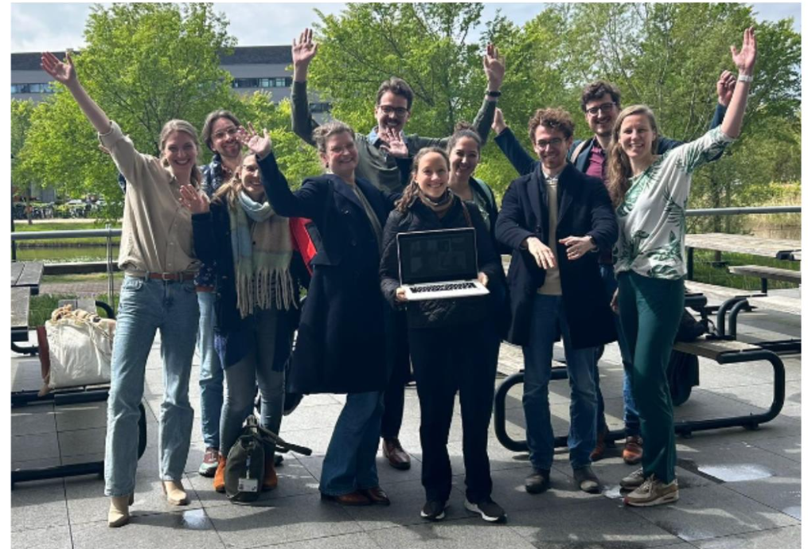
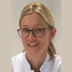
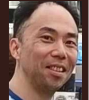

Betty van Persie, secretaris jaarvertegenwoordigers

In 2023 is de JVT volop actief geweest. Er is bijvoorbeeld meegedacht met het opleidingsplan voor 2024. Ook zijn er gesprekken geweest met het MT over planning van stages, stageplaatsen etc. De JVT heeft hierin voor de AIOS noodzakelijke verbeterpunten aangebracht.
Ook met betrekking tot de eigen werkwijze van de JVT hebben er in 2023 veranderingen plaatsgevonden. Binnen de JVT is er gestart met het maken van subcommissies. Dit maakt dat voor diverse deelonderwerpen (communicatie, kwaliteit, praktijk en onderwijs) een aparte commissie is binnen de JVT, met elk een MT-lid als aanspreekpunt. Zodoende is de taakverdeling duidelijker en efficiënter. Ook heeft het als doel om de communicatie tussen MT en JVT te verstevigen.
In 2023 hebben we diverse nieuwe JVT leden mogen verwelkomen en helaas afscheid moeten nemen van oude leden. Zo heeft onze voorzitter Jorn Groet in 2023 zijn opleiding afgerond. Mette Doesburg heeft als tijdelijk voorzitter zijn taken waargenomen. Per september 2023 is Hedwig van Wijk opgetreden als voorzitter van de JVT. Daarnaast heet Betty van Persie de taken van Manouk Schreuder als secretaris overgenomen.
Opleiden bij SOOL

dr. M. van Eijk, docent- specialist ouderengeneeskunde en kaderarts opleiden
In dit onderdeel van het jaarbericht 2023 neem ik de lezer graag mee in mijn ervaringen met de kaderopleiding opleiden (afgekort KOO), die ik volgde vanuit SOOL en mijn rol als opleider (tot voor kort in opleiding). Sinds 2012 ben ik als docent verbonden aan de afdeling. Ik heb deze 2e baan altijd als heel waardevol ervaren voor het scherp houden van je kennis en vaardigheden op dat deel waarin je als docent actief bent. In deze functie heb ik ook meerdere modules mogen ontwikkelen en door ontwikkelen. Hoewel ik nooit uitgeleerd zal zijn, merkte ik vooral veel lol te hebben aan het opleiden van individuen en kleine groepen. Ik werkte een aantal jaren buiten het verpleeghuis, waar ik veel AIOS heb begeleid in een stukje van de opleiding, vanuit de praktijk. Opleiden deed ik vooral vanuit intuïtie, en met overbrengen van veel enthousiasme voor ons vak. Bij veel AIOS werkte dat eigenlijk prima en, naar ik na de start van de KOO merkte, vooral bij de AIOS met een veelal gelijke leer/werkstijl als die van mijzelf. Klinkt als een open deur, maar toch was dat niet helemaal zo. Na een korte introductie van de KOO in een 2-daagse waar een samenvatting van alle 4 modules voorbijkwam, werd mij wel duidelijk dat op dit terrein nog een hoop te leren was voor mij. Op voortvarende wijze volgde ik de KOO van 2020 tot 2024.
De KOO bestaat naast de startmodule uit 4 modules, elk van 4 dagen verdeeld over ongeveer 4 maanden. Er is een duidelijke opbouw in het programma, waarbij veel ruimte is voor uitwisseling en reflectie. Ook is er mogelijkheid om feedback te vragen gedurende de module door materiaal voor te leggen aan peers en aan de moduledocenten. Gedurende de module heb ik daarnaast veel materiaal verzameld (lees filmpjes gemaakt), om terug te kunnen kijken en bepaalde vaardigheden te oefenen in de praktijk. Een beetje tot mijn verbazing vonden de AIOS het ontzettend leuk om onderdeel te zijn van mijn leertraject. Ik kreeg de mogelijkheid de kennis en vaardigheden direct te oefenen in de praktijk, en daar feedback op te vragen van hen. Ik merkte dat naast kennis bezitten en het overbrengen van kennis, andere dingen belangrijk zijn om een goede opleider te zijn. Enthousiast zijn over je vak en je kennis delen is niet voldoende. Sterker nog, is niet wenselijk. De AIOS
stimuleren om zelf op onderzoek uit te gaan en de AIOS naar een hoger niveau van zelfsturing coachen, dat maakt een opleider geslaagd in zijn, of in mijn geval haar, taak. Om mijn taak beter uit te voeren, heb ik vooral veel geleerd over mijzelf en hoe ik mezelf kan aanpassen om de AIOS in de leerstand te krijgen. Dat is een sterk middel om te bezitten, en intuïtie alleen is daar niet genoeg voor.
De invulling van de terugkomdagen vind ik nu veel waardevoller dan voor de start van KOO. Ik kan inbreng geven wanneer ik daar behoefte aan heb, de gêne is een beetje voorbij hiervoor, en ik kan waardevolle tips geven aan collega opleiders bij de gezamenlijke intervisie momenten.
Vanuit SOOL heb ik inspiratie gekregen voor het verder ontwikkelen van het opleidingsklimaat bij de organisatie waar ik werkzaam ben. Een aantal jaren geleden hebben we de specialisten ouderengeneeskunde samengevoegd in een opleidersgroep. Het voordeel is dat je als groep opleidt en daardoor meer ruimte hebt om meerdere AIOS tegelijk op te leiden. In het geval van de opleidersgroep van Careyn ZHE hebben we in 2 jaar tijd een mooie visie ontwikkeld op opleiden en een uitwerking van het klimaat in onze regio. We leiden op als opleidersteam waarbij naast de primaire opleider altijd een 2e opleider betrokken is, die op bepaalde competenties mede opleidt. Er is een vaste overlegstructuur waarin alle AIOS besproken worden in hun voortgang. Ook aankomende AIOS worden ingebracht om met elkaar na te denken over leerdoelen, gewenste leerresultaten en het leerklimaat waar de AIOS werkzaam is. Ook wordt 1 keer per 2 weken een onderwijsmoment georganiseerd voor allen die in opleiding zijn, een laagdrempelig trefpunt waar informatie wordt uitgewisseld op inbreng van de opleidelingen zelf. De Zuid Hollandse eilanden is niet een gemakkelijke regio om specialisten ouderengeneeskunde te werven en te binden, en mede daarom werken we al jaren intensief samen met verpleegkundige specialisten en physician assistants. Recent hebben we een visitatie gehad van de coördinator van SOOL en hebben we onze toekomstplannen gedeeld. We zijn in voorbereiding om een brede opleidersgroep te ontwikkelen in samenwerking met de VS- en PA-opleiders. Op deze manier versterken we onze samenwerking nog verder en kan nog gerichter begeleid worden voor alle opleidelingen binnen de medische dienst.
Terugblik EuGMS

dr. Wing Tong, docent-specialist ouderengeneeskunde
Met als thema "Healthy aging in a changing world" vond in het najaar van 2023 (van 20 september tot en met 22 september) het 19e congres van EuGMS plaats.
EuGMS staat voor European Geriatric Medicine Society, elk jaar vindt (veelal) in de derde week van september hun congres plaats. In 2023 was het de beurt aan Helsinki om dit internationale congres te mogen organiseren en de bezoekers welkom heten welke eerder uitgekozen werd als de congresstad van EuGMS.
Na een geslaagde editie in 2022, in London (toen was ik er nog als AIOS zijnde en nu in Helsinki als specialist ouderengeneeskunde zijnde) had SOON besloten om voor dit 19e congres ook opleiders hiervoor uit te nodigen.
Liefst 50 opleiders van de opleiding tot specialist ouderengeneeskunde, vanuit het gehele land, hadden zich voor dit congres aangemeld. Vanuit VASON ging ook een grote groep van 26 AIOS van diezelfde opleiding mee naar Helsinki. Het congresbezoek door de 26 AIOS wordt gefinancierd door de werkgever SBOH. Sommige van de AIOS mochten ook hun posterpresentatie presenteren of zelf een “oral presentation”.
Als ik kijk naar het thema van EuGMS 2023 dan past dat prima bij de missie van SBOH: het zoeken van verbinding tussen opleiders en instituten. In Nederland zijn er 5 instituten: GERION, VOSON, SOOL, UMCG en Maastricht University. Zij vallen onder SOON en SOON staat voor uitstekende kwaliteit van de opleiding tot specialist ouderengeneeskunde. Met dit doel voor ogen stimuleert en faciliteert SOON de samenwerking tussen deze 5 opleidingsinstituten.
SOON en SBOH hebben op diverse manieren die verbinding proberen te zoeken, werd op de laatste avond in Helsinki een gezamenlijk diner georganiseerd in een traditioneels Fins restaurant. SOON kon door een verstrekte subsidie (aan elk onderwijsinstituut) de opleiders in staat stellen om tegen een behoorlijk gereduceerd tarief aan dit congres te kunnen deelnemen.
De stad liet zich ook van zijn beste kant zien, door een welkomstreceptie te organiseren in 1 van de prachtige zalen van het plaatselijke gemeentehuis, met een lopend buffet. Extra leuk om te vermelden is dat voor opening van dit buffet alle aanwezigen toegezongen werden door een a capella Fins mannenkoor, onder andere en geheel toepasselijk, een passage uit Finlandia van de componist Sibelius ten gehore brachten.
Door deze 2 grote groepen samen te brengen in Helsinki (in totaal waren er 1.731 deelnemers uit 60 landen) kon de verbinding verder gezocht worden door met elkaar te netwerken, tijdens het congres, maar ook na elke congresdag. Dit was waardevol en wellicht werden de eerste nieuwe samenwerkingsverbanden aangelegd voor een vervolgonderzoek, of een nieuw project. Maar ook kennismaken met een mogelijk nieuwe werkgever, voor de AIOS die bijna klaar zijn met de opleiding tot specialist ouderengeneeskunde.
Ook in 2024 kan weer de verbinding gezocht worden tussen opleiders en instituten. Enerzijds stelt SOON weer een aantal opleiders in de gelegenheid om te kunnen deelnemen aan de 20ste editie van dit internationale congres, maar dan in Valencia. Hierbij moet vermeld worden dat opleiders die nog niet naar Helsinki geweest waren, nu voorrang krijgen op de andere deelnemers. De mogelijkheid om te kunnen inschrijven hiervoor was eerder dit jaar geweest. Anderzijds kan de verbinding gezocht worden door het bezoeken en deelnemen aan de afscheidsrede(s) gecombineerd met een symposia van 2 hoogleraren die met emeritaat gaan, namelijk die van VOSON en de hoogleraar van Maastricht University.
Zelf ga ik alle 3 de activiteiten bezoeken, ik heb er zin in. Tot slot als ik voor mezelf mag spreken, aan de verbinding tussen opleiders en instituten hecht ik zelf ook veel waarde, samen kunnen “wij” de Ouderengeneeskunde nog meer toekomstbestendig maken in een “changing world”. Op naar Ouderengeneeskunde 3.0, om gezond oud (“healthy aging” te kunnen worden met gedreven en kundige specialisten ouderengeneeskunde opgeleid door evenzo enthousiaste opleiders.